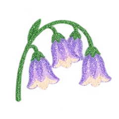

先把内容握在自己手里。
收藏不只是一条链接。保存可读取的正文、媒体、来源和自己的笔记，原网页变化后，也能回到已经留下的材料。
✦ 一个让好内容继续生长的地方
网页、帖子、视频线索、GitHub 项目，先剪藏到本地。
让零散内容长成可以探索的主题与领域，
再让已连接的 AI，在你需要时找到、理解、引用。

慢慢长大的想法不是一张图，是你可以走进去的花园
拖动画布、缩放，点开一个领域再沿主题往下走。搜索一篇收藏，翻翻节点图鉴，或直接在「外观」里换一套画风。
一段一分钟的花园日常
剪藏网页、探索花园、切换画风，再让已连接的 AI 查找收藏。
演示中的界面与内容用于介绍产品。AI 检索和整理需要单独安装、连接并授权兼容的本地 AI 插件。不想再有一个吃灰的收藏夹
设计参考、开源项目、学习文章……
它们不该只停留在「我好像存过」。
收藏不只是一条链接。保存可读取的正文、媒体、来源和自己的笔记，原网页变化后，也能回到已经留下的材料。
一篇帖子是一颗种子；相关的收藏形成主题，再长成领域。花园帮助你看见已有内容，沿着线索继续深入。
连接资料库后，在具体任务里检索、阅读和引用收藏。整理得到的归纳与原始材料分开保存，方便回溯，也方便继续修订。
一份内容，四种用法
从一个简单的保存动作开始，
按需要再连接花园与 AI。
看到好内容，一下就存
保存标题、作者、链接、可读取的正文与主要图片，再补一句自己的想法。GitHub 项目和 B 站视频，也可以先留下项目说明或视频线索。
基础剪藏使用浏览器扩展即可；首次保存需选择位置并授权。
了解功能与使用条件 ↗一点点操作，一点点生长
切片来自产品演示，静音自动循环。AI 检索演示需要兼容客户端连接本地插件。
11 种画法，同一个自己的世界
收藏之后，真正派上用场
“找出我收藏里关于信息层级的参考，读原文，说明分别适合什么场景。”
找回案例，带着出处理解设计方法。
“对比我保存的两个 GitHub 项目，列出实现条件，以及还需要核实的地方。”
从留下的项目材料出发，减少重复翻找。
“整理新收藏，保留我的标签和原件，先给我看分类与主题计划。”
按你的指令整理，保留原件和人工标签。
这些是使用示例。回答取决于已保存的内容、已连接的工具与实际读取结果；Kumo 不会自动训练模型。
选一条适合你的开始方式
保留解压后的文件夹；它就是浏览器加载扩展的位置。
打开扩展管理页 → 开发人员模式 → 加载解压缩的扩展，选择包含 manifest.json 的目录。
将 Kumo 固定到工具栏，保存第一篇网页。Windows 默认 Ctrl+Q；可在保存设置中调整实际按键。
查看收藏列表与知识花园时，再连接本地助手和同一个资料目录。
完整安装指南 ↗已安装 Codex CLI 时，可复制下面的命令添加仓库来源：
codex plugin marketplace add Megumin61/Kumo刷新或重启桌面客户端，在插件目录中选择 Kumo 来源并安装，然后新建对话。也可按完整指南添加本地仓库目录。
授权自己的资料目录，与浏览器使用同一位置；先检索，需要整理时再授权写入派生知识。
当前提供本地分发，尚未上架 OpenAI 公共目录。普通云端聊天不会因此自动读取电脑文件。
官方插件安装说明 ↗Edge 商店进度见 发布记录 ↗。本地下载与商店审核分别进行。
Kumo: clip everything.
去小红书看看制作日常 ↗